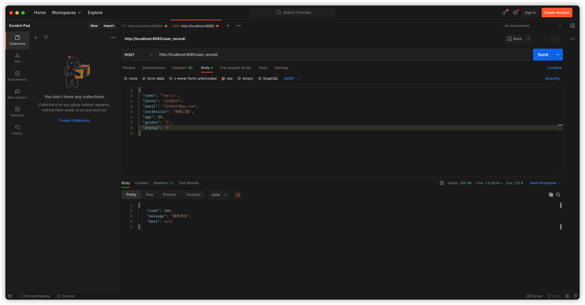
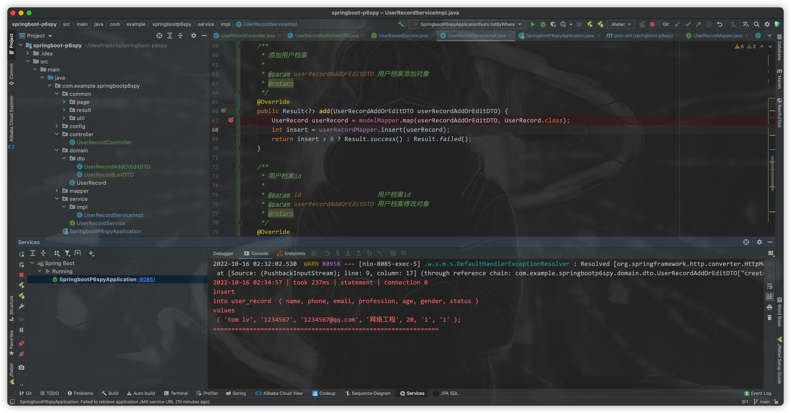
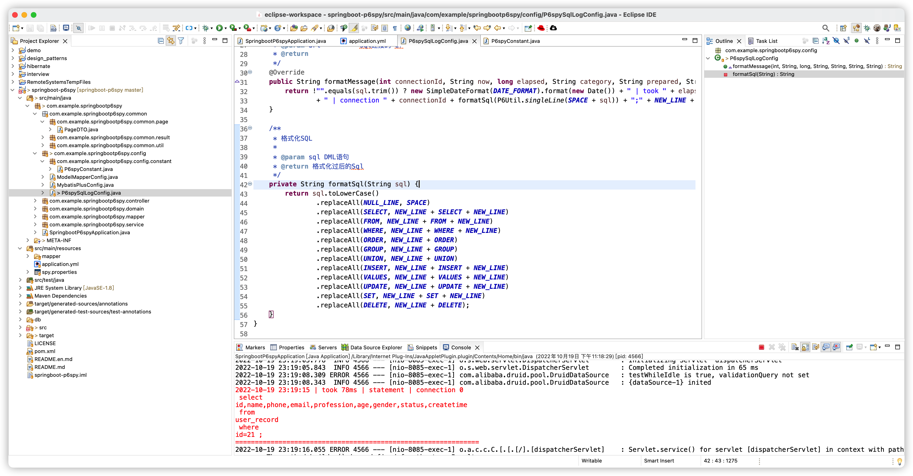
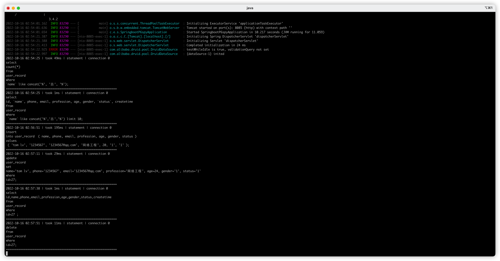

控制台输出完整SQL日志方案
SQL日志输出问题
在之前的一篇播客《Java工程师必须了解的高速开发方案》中提到过，可以采用 “Mybatis Log plugin”插件输出完整SQL。但是，这种方案局限性太大。仅仅只适用于IDEA这一款工具，对于很对Eclipse/MyEclipse用户不太友好。 还有一点局限在于只能在开发环境中通过这款插件查看SQL日志，项目一旦上线出现SQL未能及时同步等问题，排查将会非常麻烦。
解决方案
通过分析上述问题，可以考虑在控制台输出完整的SQL日志，并且可在配置文件中控制是否输出完整SQL日志的解决方案。使用P6spy来控制SQL日志输出则是一个非常适合的方案,官网地址“https://p6spy.readthedocs.io/en/latest/”。
直接上代码，mybatis版完整demo地址
1
| https://gitee.com/sheng_yu_lu/springboot-p6spy.git
|
jpa版完整demo地址
1
| https://gitee.com/sheng_yu_lu/springboot-jpa-sql-log-demo.git
|
格式化处理方案
由于p6spy 默认打印SQL完整日志的格式不利于阅读，当SQL过于复杂时反而会导致SQL日志输出毫无意义。所以采用编写自定义格式化配置类的方案达到方便阅读的目的。
P6spy.properties文件中设置 自定义日志打印 必须指定自定义格式化配置类路径。日志输出到控制台配置可以采用Mybatisplus提供的StdoutLogger类，底层源码为System.err.println()日志控制台中打印更方便阅读。在内网环境部署，可以不用修改该配置文件方便查看Linux运行日志。 如果需要部署在公网，则必须考虑安全性问题，建议先注释掉该文件保证控制台不会打印SQL日志再进行发布上线。
1
2
3
4
5
6
7
8
9
10
11
12
13
14
15
16
17
18
19
20
21
22
23
24
25
26
27
28
29
30
31
32
33
34
35
36
37
38
39
40
41
42
43
44
|
modulelist=com.baomidou.mybatisplus.extension.p6spy.MybatisPlusLogFactory,com.p6spy.engine.outage.P6OutageFactory
logMessageFormat=com.example.springbootp6spy.config.P6spySqlLogConfig
appender=com.baomidou.mybatisplus.extension.p6spy.StdoutLogger
deregisterdrivers=true
useprefix=true
excludecategories=info,debug,result,commit,resultset
dateformat=yyyy-MM-dd HH:mm:ss
driverlist=com.mysql.cj.jdbc.Driver
outagedetection=true
outagedetectioninterval=2
customLogMessageFormat=[%(currentTime)] [%(category)-%(connectionId)] [execute time: %(executionTime) ms] execute sql:\n %(sql)
|
为整合p6spy,yml文件也必须做修改,连接配置采用P6spy代理。
1
2
3
4
5
6
7
8
9
10
11
12
13
14
15
16
17
| mybatis:
mapper-locations: classpath:mapper/*xml
type-aliases-package: com.example.springbootp6spy.domain
server:
port: 8085
spring:
application:
name: springboot-p6spy
datasource:
type: com.alibaba.druid.pool.DruidDataSource
url: jdbc:p6spy:mysql://localhost:3306/just_do_it
username: root
password: 12345678
driver-class-name: com.p6spy.engine.spy.P6SpyDriver
|
自定义格式化类为了阅读以及调试代码方便，SQL关键字和占位符常量都采用了静态导入的方案。由于持久层使用的是Mybatis 和Mybatis-plus 框架，必须清楚使用Mybatis原生XML大多数人编写SQL通常是小写。但是采用Mybatis-plus框架以全自动ORM映射的形式拼接SQL语句则会导致关键字大写。所以在进行SQL格式化处理时必须考虑这两种情况。
所以处理必须按照固定流程。先将占位符进行处理得到格式相对完善的整行SQL，而后再处理小写关键字当存在小写关键字则会对SQL语句进行格式胡处理，最后处理大写关键字，当存在大写关键字才会格式化SQL。
由于目标是输出小写的且格式化过后的sql。如果大写关键字和小写关键字处理顺序颠倒并且SQL中存在大写关键字则会出现处理完大写关键字后SQL关键字转化为小写关键字被程序识别到再次处理。导致多次处理，最终会造成格式化解析错误的情况出现。
1
2
3
4
5
6
7
8
9
10
11
|
SELECT 字段1,字段2,字段3 FROM tb
select
字段1,字段2,字段3
from
tb
|
自定义格式化类代码如下，通过继承MessageFormattingStrategy接口重写formatMessage方法实现SQL日志输出，在格式化处理之前必须采用P6Util.singleLine()方法处理，保证SQL打印在同一行，方便进行格式化处理。为了方便调试程序时优化SQL性能，将took SQL执行时长一同打印。
1
2
3
4
5
6
7
8
9
10
11
12
13
14
15
16
17
18
19
20
21
22
23
24
25
26
27
28
29
30
31
32
33
34
35
36
37
38
39
40
41
42
43
44
45
46
47
48
49
50
51
52
53
54
55
56
57
58
59
60
61
62
63
64
65
66
67
68
69
70
71
72
73
74
75
76
77
78
79
80
81
82
| package com.example.springbootp6spy.config;
import com.p6spy.engine.common.P6Util;
import com.p6spy.engine.spy.appender.MessageFormattingStrategy;
import java.text.SimpleDateFormat;
import java.util.Date;
import java.util.Locale;
import static com.example.springbootp6spy.config.constant.P6spyConstant.*;
public class P6spySqlLogConfig implements MessageFormattingStrategy {
@Override
public String formatMessage(int connectionId, String now, long elapsed, String category, String prepared, String sql, String url) {
return !"".equals(sql.trim()) ? new SimpleDateFormat(DATE_FORMAT).format(new Date()) + " | took " + elapsed + "ms | " + category
+ " | connection " + connectionId + formatSql(P6Util.singleLine(SPACE + sql)) + ";" + NEW_LINE + LINE : "";
}
@SuppressWarnings("all")
private String formatSql(String sql) {
String sqlString = sql
.replaceAll(SPACE_XML, SPACE)
.replaceAll(NULL_LINE, SPACE);
String sqlLowerCase = sqlString
.replaceAll(SELECT_LOWERCASE, NEW_LINE + SELECT_LOWERCASE + NEW_LINE)
.replaceAll(FROM_LOWERCASE, NEW_LINE + FROM_LOWERCASE + NEW_LINE)
.replaceAll(WHERE_LOWERCASE, NEW_LINE + WHERE_LOWERCASE + NEW_LINE)
.replaceAll(ORDER_LOWERCASE, NEW_LINE + ORDER_LOWERCASE)
.replaceAll(GROUP_LOWERCASE, NEW_LINE + GROUP_LOWERCASE)
.replaceAll(UNION_LOWERCASE, NEW_LINE + UNION_LOWERCASE)
.replaceAll(INSERT_LOWERCASE, NEW_LINE + INSERT_LOWERCASE)
.replaceAll(INTO_LOWERCASE, INTO_LOWERCASE + NEW_LINE)
.replaceAll(VALUES_LOWERCASE, NEW_LINE + VALUES_LOWERCASE + NEW_LINE)
.replaceAll(UPDATE_LOWERCASE, NEW_LINE + UPDATE_LOWERCASE + NEW_LINE)
.replaceAll(SET_LOWERCASE, NEW_LINE + SET_LOWERCASE + NEW_LINE)
.replaceAll(DELETE_LOWERCASE, NEW_LINE + DELETE_LOWERCASE);
String sqlUpperCase = sqlLowerCase
.replaceAll(DELETE_UPPERCASE, NEW_LINE + DELETE_LOWERCASE)
.replaceAll(SELECT_UPPERCASE, NEW_LINE + SELECT_LOWERCASE + NEW_LINE)
.replaceAll(FROM_UPPERCASE, NEW_LINE + FROM_LOWERCASE + NEW_LINE)
.replaceAll(WHERE_UPPERCASE, NEW_LINE + WHERE_LOWERCASE + NEW_LINE)
.replaceAll(ORDER_UPPERCASE, NEW_LINE + ORDER_LOWERCASE)
.replaceAll(GROUP_UPPERCASE, NEW_LINE + GROUP_LOWERCASE)
.replaceAll(UNION_UPPERCASE, NEW_LINE + UNION_LOWERCASE)
.replaceAll(INSERT_UPPERCASE, NEW_LINE + INSERT_LOWERCASE)
.replaceAll(INTO_UPPERCASE, INTO_LOWERCASE + NEW_LINE)
.replaceAll(VALUES_UPPERCASE, NEW_LINE + VALUES_LOWERCASE + NEW_LINE)
.replaceAll(UPDATE_UPPERCASE, NEW_LINE + UPDATE_LOWERCASE + NEW_LINE)
.replaceAll(SET_UPPERCASE, NEW_LINE + SET_LOWERCASE + NEW_LINE);
return sqlUpperCase;
}
}
|
格式化常量具体代码如下。
1
2
3
4
5
6
7
8
9
10
11
12
13
14
15
16
17
18
19
20
21
22
23
24
25
26
27
28
29
30
31
32
33
34
35
36
37
38
39
40
41
42
43
44
45
46
47
48
49
50
51
52
53
54
55
56
57
58
59
60
61
62
63
64
65
66
67
68
69
70
71
72
73
74
75
76
77
78
79
80
81
82
83
84
85
86
87
88
89
90
91
92
93
94
95
96
97
98
99
100
101
102
103
104
105
106
107
108
109
110
111
112
113
114
115
116
117
118
119
120
121
122
123
124
125
126
127
128
129
130
131
132
133
134
135
136
137
138
139
140
141
142
143
144
145
146
147
148
149
150
151
152
153
154
155
156
157
158
159
160
| package com.example.springbootp6spy.config.constant;
public class P6spyConstant {
public static final String DATE_FORMAT = "yyyy-MM-dd HH:mm:ss";
public static final String NEW_LINE = "\n";
public static final String LINE = "==============================================================";
public static final String SELECT_LOWERCASE = " select ";
public static final String SELECT_UPPERCASE = " SELECT ";
public static final String FROM_LOWERCASE = " from ";
public static final String FROM_UPPERCASE = " FROM ";
public static final String WHERE_LOWERCASE = " where ";
public static final String WHERE_UPPERCASE = " WHERE ";
public static final String INSERT_LOWERCASE = " insert ";
public static final String INSERT_UPPERCASE = " INSERT ";
public static final String VALUES_LOWERCASE = " values ";
public static final String VALUES_UPPERCASE = " VALUES ";
public static final String UPDATE_LOWERCASE = " update ";
public static final String UPDATE_UPPERCASE = " UPDATE ";
public static final String SET_LOWERCASE = " set ";
public static final String SET_UPPERCASE = " SET ";
public static final String DELETE_LOWERCASE = " delete ";
public static final String DELETE_UPPERCASE = " DELETE ";
public static final String ORDER_LOWERCASE = " order ";
public static final String ORDER_UPPERCASE = " ORDER ";
public static final String GROUP_LOWERCASE = " group ";
public static final String GROUP_UPPERCASE = " GROUP ";
public static final String UNION_LOWERCASE = " union ";
public static final String UNION_UPPERCASE = " UNION ";
public static final String INTO_LOWERCASE = " into ";
public static final String INTO_UPPERCASE = " INTO ";
public static final String NULL_LINE = " ";
public static final String SPACE = " ";
public static final String SPACE_XML =" ";
}
|
为了保证在格式的时候不会出现解析出错，关键字必须在前后用空格占位符。例如存在字段 update_time ，如果不采用前后设置空格占位符的方案，程序会在出现update关键字时直接进行格式化处理，结果则会出现。
导致SQL即使在控制台输出也无法正常执行的问题。为防止以上情况发生必须在关键字常量定义时采取前后设置空格的方式。
程序调试
请求接口，在编译器IDEA控制台当中可输出完整且格式化过后的SQL


在编译器Eclipse控制台中同样可以输出完整且格式化过后的SQL

在不注释P6spy.properties文件的前提下打包部署到服务器后，对接口发送请求通过tailf命令查看 Jar文件运行日志可查看到完整且格式化的 SQL DML 操作。
